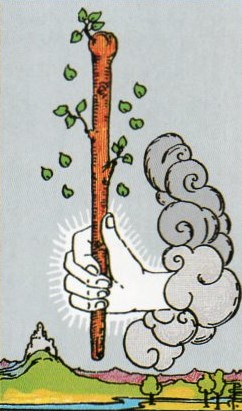
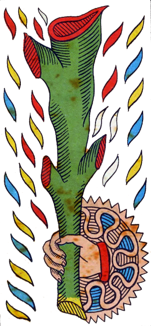
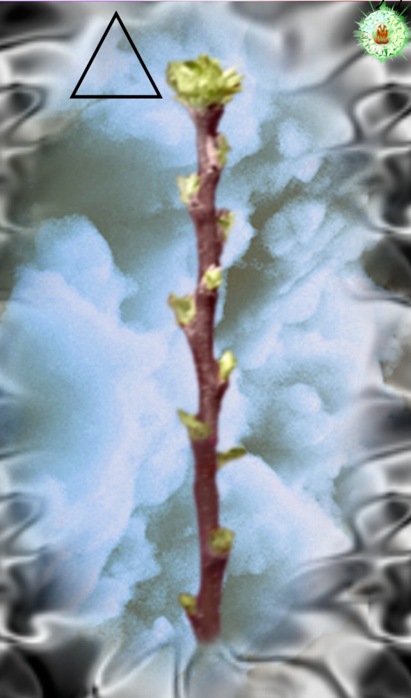
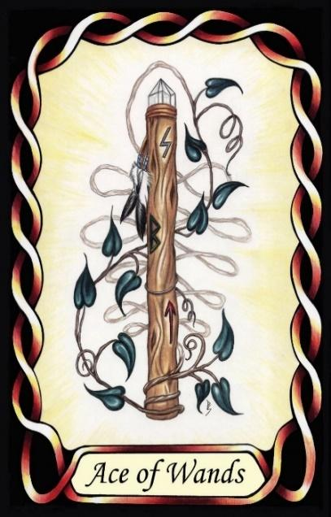

Ace of Wands




Fire Change, Transformation
The Wands is the Principle of Fire, which is recognizable in all forms of energy, which in turn causes all change within this material world. Plasma, flame.
Fire imbues in people the ability to understand how the world works, as in the processes of change.
[P6] Then issues forth the Word of God. The Word descends from the light to the moisture (waters), and Fire is born from the female principle. The Fire flies upwards. [Wands]. …
Meaning
It represents the element of Fire, which causes all change and action in the physical world, and is Life, a process of burning fuel. Fire imbues in people the ability to understand how the world works, as in the processes of change.
RWS Imagery
In the Waite-Smith deck, a wand, symbol of Fire, issues forth from the cloud, as described in the Pymander, via a hand.
Discussion
Without Fire there would be no change, and no life. The wand represents the process of life which harnesses the energy of Fire to create change in a manner opposed to entropy.
Fire is both hot and dry. When describing personality, hot is seen as impassioned and enthusiastic. Dry is concerned with physical results, rather than the wellbeing of people. Note the hand issue from what may be a stylised cloud in the Marseilles deck also, and in all four Aces, indicating that even the early decks had a relationship with the Pymander, and it was not introduced in the RWS.